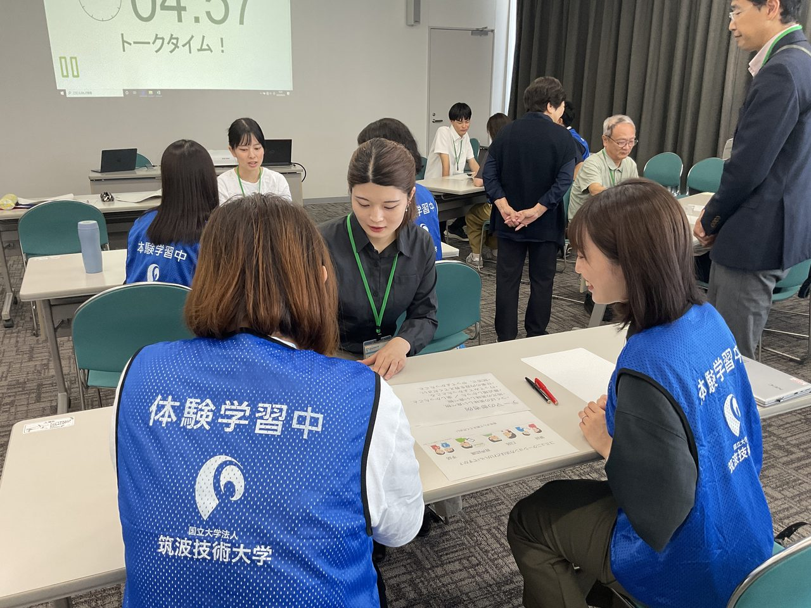

つくば市職員ユニバーサルデザイン研修

取り組みの概要
筑波技術大学の学生が講座運営の重要な役割を担っています。学生はつくば市職員とペアでワークに参加しており、職員との直接的なコミュニケーションを通して、障害特性の理解や支援方法の実践的な学習を支援しています。
また、建築バリアフリーへの気づき、情報保障技術の活用方法や運用上の留意点など、学生の専門性を活かした知識・技術の向上にも寄与しています。
- 連携先
- つくば市
- 期間
- 2007年8月〜（継続中）
- 関わった学生の領域
- 情報・機械・建築・デザイン
- 主体教員
- 産業技術学部：山脇博紀、加藤伸子 ほか保健科学部教員
- 学生の関わり方
- 課外活動・授業として（学部2・3・4年生）
学生の学びと関わり
学生の役目
企画、ワークショップへの参加、インタビューへの協力。
求められた専門性
トイレや駐車場などの建築空間のバリアフリーに関する知識、聴覚障害者を支援する情報保障技術とコミュニケーション法、視覚障害特性に関する知識と行政窓口対応スキルの向上。
連携先にとっての価値
行政職員の障害者理解によるユニバーサルデザインの意識づくり。
成果
2007年から継続し、天久保・春日の両キャンパスから毎年20名前後の学生が関わって実施する研修です。
連携先担当者の評価
※ コメントは掲載準備中です。つくば市 ご担当者
関連サイト
活動の写真
